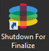

In Nutanix AHV
Add a version to an OS Layer (Nutanix AHV)
In this article:
The Unidesk OS Layer contains the Windows Operating System that is assigned to any Unidesk Layered Images you create using that OS Layer. Once created, you can use the OS Layer to build as many Layered Images as you want.
The OS Layer includes a virtual machine in your infrastructure running the Unidesk-supported Windows Operating System that you want to use for your Layered Images.
Before you start
Before you can create an OS Layer version, you'll need to:
Add a version of an OS Layer
To add a version of an OS Layer, take the following steps:
-
In the Unidesk Management Console, select Layers > OS Layers.
-
Select or right-click an OS Layer icon and click Add Version. This opens the Create OS Version Wizard.
-
(Required) In the Version Details tab, enter a Version identifier. This can be the application version, or anything you choose.
-
In the Connector tab, select a Connector configuration for the platform where you'll be publishing your Layered Images. You can also modify an existing configuration by selecting it and clicking Edit. If you have not yet created a Connector Configuration or if the configuration you need is not present, click New to create a new Connector Configuration and select it from this list.
Example: If you're using the Nutanix AHV environment to create the Layer, select the Nutanix AHV connector with the credentials and location required to access the Nutanix Storage Container where you want to build the Layer.
-
In the Platform Layer tab, select a Platform Layer that contains the tools and hardware settings that you need to install and package the OS when adding a Layer Version. Once created, the new Layer Version can be used in Layered Images published to any platform.
-
In the Packaging Disk tab, enter a file name for the Packaging Disk, and select the disk format. This disk will be used for the Packaging Machine (the VM)where you will install the application, as described in the next two sections.
-
Confirm and Complete tab - Verify your settings and click Create Version. Unidesk runs the task of creating a new OS version. When the task completes, it shows a status of Action Required. When you double-click the task to expand it, the task contains the following text (refer to the image in the next section):
"The Packaging Disk has been published. The virtual machine '<...>' can be found in folder '<...>' in datacenter '<...>'. Power on this virtual machine to install your application. When the installation is complete, power off the virtual machine before clicking Finalize on the Action bar."
Next, you can deploy a Packaging Machine for this OS Layer version.
Access the Packaging Machine in Nutanix AHV
- Log into Nutanix Prism.
-
Back in the Unidesk Management Console (UMC), expand the Tasks bar at the bottom of the UI, and double-click the Create Platform Layer task to see the full Task Description (example below).
- Use the instructions in the Task Description to navigate to the Packaging Machine in Prism.
- Install the app for your Layer. This may require a reboot as part of the installation. Once complete, you should see that you have access to the tools, as well as all of the data available under the Performance tab for your VM.

Deploy a Packaging Machine to Nutanix AHV
The Packaging Machine is a virtual machine where you install any updates or applications you want to include in the OS Layer. It is strongly recommended that you use a unique Packaging Machine for each Layer. The Packaging Machine is a temporary VM that will be deleted once the OS Layer has been finalized.
The Task Description (example shown in the last step above) contains directions to navigate to the Storage Container in Nutanix AHV, where the Packaging Machine for this Layer has been created.
To create your Packaging Machine in Nutanix AHV, begin with the expanded Packaging Disk task shown in step 2 below.
-
Log into Nutanix Prism.
-
Back in the Unidesk Management Console, use the instructions in the expanded Packaging Disk Task (example shown below) to navigate to the Packaging Machine.
The Packaging Machine will be powered on.
-
Use the instructions in the Task Description to navigate to the Packaging Machine in Prism.

Install the OS##update
-
Remote log into the Packaging Machine in Nutanix AHV. Be sure to log in with the User account you used to create the OSin Nutanix AHV.
-
Install any updates or applications you want to include in the new OSLayer version, such as Windows Updates or anti-virus applications.
If an application installation requires a system restart, restart it manually. The Packaging Machine does not restart automatically.
-
Make sure the Packaging Machine is in the state in which you want it to be in for the user.
Next, you will shut down the Packaging Machine and verify that the Layer is ready to finalize.
Verify the Layer and shut down the Packaging Machine
Once the application is installed on the Packaging Machine, the next step is to verify that the Layer is ready to be finalized. To be ready for finalization, any required post-installation processing needs to be completed. For example, a reboot may be required, or a Microsoft NGen process may need to complete.
To verify that any outstanding processes are complete, you can run the Shutdown For Finalize tool (icon below), which appears on the Packaging Machine's desktop.

To use the Shutdown For Finalize tool:
- If you are not logged into the Packaging Machine, remote log in as the user who created the machine.
- Double-click the Shutdown For Finalize icon. A command line window displays messages detailing the layer verification process.
- If there is an outstanding operation that must be completed before the Layer can be finalized, you are prompted to complete the process. For example, if a Microsoft NGen operation needs to complete, you may be able to expedite the NGen operation, as detailed below.
- Once any pending operations are complete, double-click the Shutdown For Finalize icon again. This shuts down the Packaging Machine.
The Layer is now ready to finalize.
Layer integrity messages you may see during
Layer integrity messages let you know what queued tasks must be completed before a Layer is finalized.
The new Layer or Version can only be finalized when the following conditions have been addressed:
- A reboot is pending to update drivers on the boot disk - please check and reboot the Packaging Machine.
- A post-installation reboot is pending - please check and reboot the Packaging Machine.
- An MSI install operation is in progress - please check the Packaging Machine.
-
A Microsoft NGen operation is in progress in the background.
Note: If a Microsoft NGen operation is in progress, you may be able to expedite it, as described in the next section.
Expediting a Microsoft NGen operation
NGen is the Microsoft Native Image Generator. It is part of the .NET system, and basically re-compiles .NET byte code into native images and constructs the registry entries to manage them. Windows will decide when to run NGen, based on what is being installed and what Windows detects in the configuration. When NGen is running, you must let it complete. An interrupted NGen operation can leave you with non-functioning .NET assemblies or other problems in the .NET system.
You have the choice of waiting for the NGen to complete in the background, or you can force the NGen to the foreground. You can also check the status of the NGen operation, as described below. However, every time you check the queue status, you are creating foreground activity, which might cause the background processing to temporarily pause.
Forcing the NGen to the foreground will allow you to view the progress and once the output has completed, you should be able to finalize the layer.
-
Force an NGen operation to the foreground.
Normally, NGen is a background operation and will pause if there is foreground activity. Bringing the task into the foreground can help the task to complete as quickly as possible. To do this:
-
Open a command prompt as Administrator.
-
Go to the Microsoft .NET Framework directory for the version currently in use:
cd C:\Windows\Microsoft.NET\FrameworkNN\vX.X.XXXXX
-
Enter the NGen command to execute the queued items:
ngen update /force
This brings the NGen task to the foreground in the command prompt, and lists the assemblies being compiled.
Note: It’s okay if you see several compilation failed messages!
- Look in the Task Manager to see if an instance of MSCORSVW.EXE is running. If it is, you must allow it to complete, or re-run ngen update /force. Do not reboot to stop the task. You must allow it to complete.
-
-
Check the status of an NGen operation
-
Open a command prompt as Administrator.
-
Check status by running this command:
ngen queue status
-
When you receive the following status, the NGen is complete, and you can finalize the Layer.
The .NET Runtime Optimization Service is stopped
-
Finalize the OS Layer
Once the Packaging Machine is created and any apps or updates installed, you'll need to finalize the layer.
Note: When you finalize a new version of an OS Layer, Unidesk deletes the Packaging Machine so as not to incur more costs.
When a layer is ready to finalize:
-
Return to the Unidesk Management Console.
-
In the Layers module, select the Layer.
-
Select Finalize in the Action bar.
-
Monitor the Task bar to verify that the action completes successfully and that the layer is deployable.
Reference: Create OS Version Wizard values
-
Version - (Required) This can be the version of the OS Layer or a version you assign to the Layer. This value is displayed in the Details view of the Layer.
- Version Description - (Optional) Enter a description of the version.
- Max Layer Size - (Optional) Maximum layer size in gigabytes. Layers are thin provisioned, and will grow as needed, up to the maximum size. The default Max Layer Size is 100 gigabytes. If the version you are creating could requires more space, change this to a realistic value.
- Select a Platform Connector configuration - (Required) Specify a Unidesk Platform Connector for the platform where you'll be publishing your Layered Images. For example, if you're publishing to Azure RD Session Host, select the Azure RDSH connector with the credentials required to access the account. If the configuration you need is not listed, add a New one and select it from this list. If you want to change the settings of a Platform Connector configuration, select it and click Edit.
- Packaging Disk Filename - (Required) The name of the Packaging Machine you created in Azure.